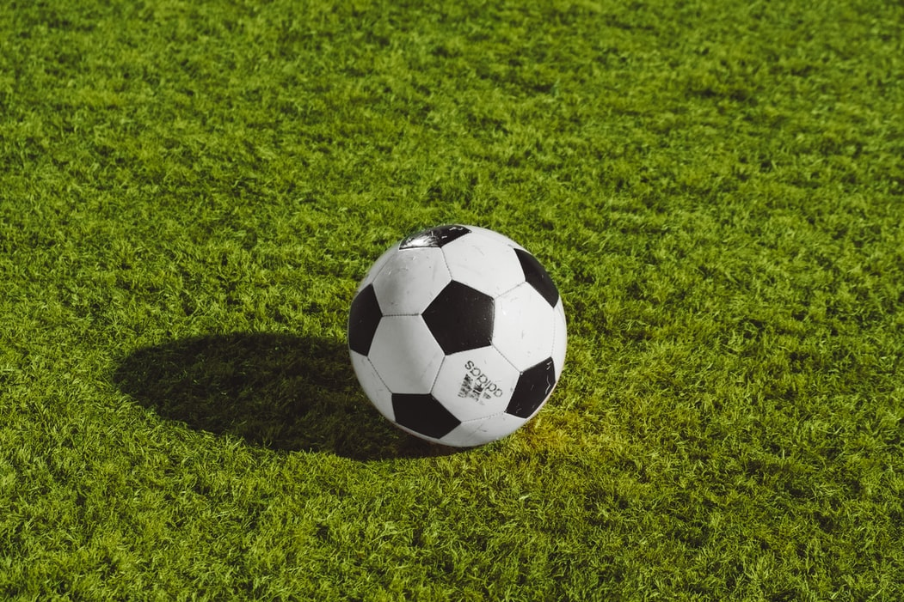

Hypertext Markup Language(HTML) is the standard markup language for creating web pages and web applications.
Cristiano Ronaldo dos Santos Aveiro GOIH ComM (Portuguese pronunciation: [kɾiʃˈtjɐnu ʁɔˈnaɫdu]; born 5 February 1985) is a Portuguese professional footballer who plays as a forward for Premier League club Manchester United and captains the Portugal national team. Often considered the best player in the world and widely regarded as one of the greatest players of all time, Ronaldo has won five Ballon d'Or awards[note 3] and four European Golden Shoes, the most by a European player. He has won 32 trophies in his career, including seven league titles, five UEFA Champions Leagues, one UEFA European Championship and one UEFA Nations League. Ronaldo holds the records for most goals (134) and assists (42) in the Champions League, most goals in the European Championship (14), and most international goals by a male player (111). He is one of the few recorded players to have made over 1,100 professional career appearances, and has scored over 780 official senior career goals for club and country.